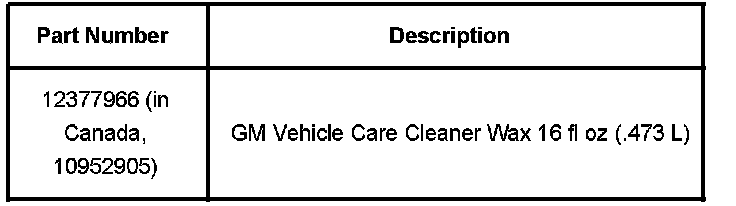

Wheels - Chrome Wheel Brake Dust Accumulation/Pitting
Bulletin No.: 04-03-10-012BDate: February 01, 2008
INFORMATION
Subject:
Pitting and Brake Dust on Chrome wheels
Models:
2008 and Prior GM Passenger Cars and Trucks (including Saturn)
2008 and Prior HUMMER H2, H3
2005-2008 Saab 9-7X
Supercede:
This bulletin is being revised to add model years. Please discard Corporate Bulletin Number 04-03-10-012A (Section 03 - Suspension).
Analysis of Returned Wheels
Chrome wheels returned under the New Vehicle Limited Warranty for pitting concerns have recently been evaluated. This condition is usually most severe in the vent (or window) area of the front wheels. This "pitting" may actually be brake dust that has been allowed to accumulate on the wheel. The longer this accumulation builds up, the more difficult it is to remove.
Cleaning the Wheels
In all cases, the returned wheels could be cleaned to their original condition using GM Vehicle Care Cleaner Wax, P/N 12377966 (in Canada, P/N 10952905). When using this product, you should confine your treatment to the areas of the wheel that show evidence of the brake dust build-up. This product is only for use on chromed steel or chromed aluminum wheels.

Parts Information
Warranty Information
Wheel replacement for this condition is NOT applicable under the terms of the New Vehicle Limited Warranty.

Disclaimer